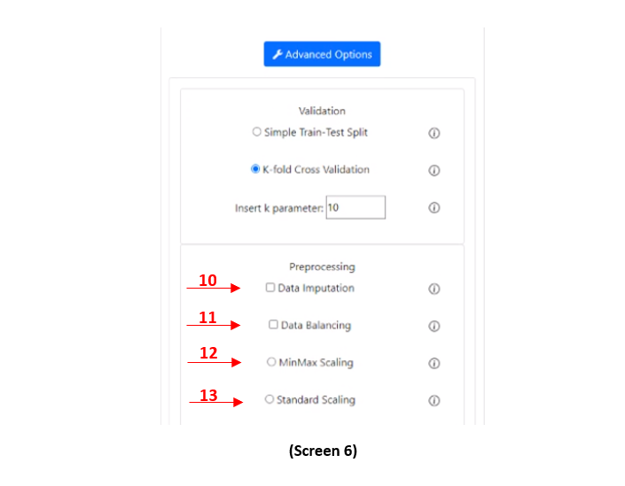

For validation you can choose to load a single dataset but you have to check on automatically Split the Training Set (1 – Screen 1) because otherwise the tool will not have 2 dataset, one for the train and one for the test. In the advanced options you can choose between Simple Train-Test Split and K-Fold Cross Validation (2 - 3 – Screen 2) and if you pick the second one you can even choose the “k” parameter. (4 – Screen 3)
If you load two dataset (Train and Test) the validation process will only format those datasets for the next step.
For preprocessing you can choose to Reduce columns with Feature Extraction (PCA) (5 – Screen 4) or Feature Selection (K Best) (6 – Screen 4) and/or Reduce rows with Prototype Selection (7 – Screen 4). In the advanced options you can insert the number of columns and rows to reduce (Default is 2 columns and 100 rows). (8 - 9 – Screen 5)
In the advanced options there are 2 checkboxes for Data Imputation (10 – Screen 6) and Data balancing (11 – Screen 6) and also for MinMax (12 – Screen 6) or Standard Scaling (13 – Screen 6).
Cross-validation is a statistical method used to estimate the skill of machine learning models.
It is commonly used in applied machine learning
to compare and select a model for a given predictive modeling problem because it is easy to understand, easy to implement, and results in skill estimates that generally have a lower bias than other methods.
LOREM IPSIUUUUUM